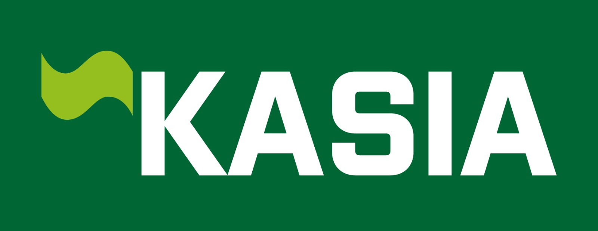

<!-- Sub-gallery index for the sklad (warehouse-app) UX-refresh mockups. Mirrors the parent
     design-options/index.html card/iframe/cover mechanism. Served at /static/navrhy/sklad/. -->
<meta charset="utf-8">
<meta name="viewport" content="width=device-width, initial-scale=1">
<title>Návrhy vzhledu skladu — polish + UX (Kasia)</title>
<link rel="icon" type="image/png" sizes="32x32" href="assets/favicon-32.png">
<style>
  :root { --ink: #16181d; --soft: #5b6068; --line: #e4e2dd; --bg: #f6f4ef; --card: #ffffff; --accent: #1f6b3a; }
  * { box-sizing: border-box; }
  html, body { margin: 0; background: var(--bg); color: var(--ink); font-family: -apple-system, BlinkMacSystemFont, "Segoe UI", Roboto, "Helvetica Neue", Arial, sans-serif; line-height: 1.5; -webkit-font-smoothing: antialiased; }
  header.page { max-width: 1240px; margin: 0 auto; padding: 3rem 1.5rem 1.5rem; }
  header.page .logo { height: 34px; width: auto; display: block; margin-bottom: 1.25rem; }
  h1 { font-size: clamp(1.6rem, 3vw, 2.3rem); margin: 0 0 0.5rem; letter-spacing: -0.01em; }
  header.page p.lede { margin: 0; max-width: 66ch; color: var(--soft); font-size: 1.05rem; }
  header.page p.note { margin: 1rem 0 0; max-width: 66ch; color: var(--soft); font-size: 0.9rem; padding: 0.6rem 0.85rem; background: #fff; border: 1px solid var(--line); border-left: 3px solid var(--accent); border-radius: 4px; }
  header.page p.note a { color: var(--accent); font-weight: 600; }
  main { max-width: 1240px; margin: 0 auto; padding: 1rem 1.5rem 4rem; }
  h2.group { font-size: 1.05rem; letter-spacing: 0.01em; margin: 2.5rem 0 0.35rem; padding-top: 1.5rem; border-top: 1px solid var(--line); }
  h2.group:first-of-type { margin-top: 0; padding-top: 0; border-top: 0; }
  h2.group.locked { color: var(--accent); }
  p.group-note { margin: 0 0 1.5rem; color: var(--soft); font-size: 0.9rem; max-width: 70ch; }
  .grid { display: grid; grid-template-columns: repeat(auto-fill, minmax(330px, 1fr)); gap: 1.75rem; }
  .card { background: var(--card); border: 1px solid var(--line); border-radius: 10px; overflow: hidden; display: flex; flex-direction: column; transition: box-shadow .18s ease, transform .18s ease; }
  .card:hover { box-shadow: 0 12px 30px -12px rgba(0,0,0,.22); transform: translateY(-2px); }
  .card.lock { border-color: #bcd8c6; box-shadow: inset 0 0 0 2px #eaf3ee; }
  .thumb { position: relative; width: 100%; height: 248px; overflow: hidden; border-bottom: 1px solid var(--line); background: #fafafa; }
  .thumb iframe { position: absolute; top: 0; left: 0; width: 1280px; height: 1612px; border: 0; transform: scale(0.258); transform-origin: top left; pointer-events: none; }
  .thumb a.cover { position: absolute; inset: 0; z-index: 2; display: block; }
  .meta { padding: 0.85rem 1rem 1rem; display: flex; flex-direction: column; gap: 0.5rem; }
  .label { font-size: 0.95rem; font-weight: 600; letter-spacing: -0.005em; }
  .num { color: var(--soft); font-variant-numeric: tabular-nums; }
  .tag { display: inline-block; font-size: 0.72rem; font-weight: 600; text-transform: uppercase; letter-spacing: 0.06em; padding: 0.15rem 0.5rem; border-radius: 999px; align-self: flex-start; }
  .tag.lock { background: #1f6b3a; color: #fff; }
  .tag.ok { background: #eaf3ee; color: #1f6b3a; }
  .tag.sec { background: #f3eee0; color: #8a5a12; }
  .open { font-size: 0.85rem; color: var(--accent); text-decoration: none; font-weight: 600; }
  .open:hover { text-decoration: underline; }
  footer.page { max-width: 1240px; margin: 0 auto; padding: 0 1.5rem 4rem; color: var(--soft); font-size: 0.85rem; }
</style>

<header class="page">
  
  <h1>Návrhy vzhledu skladu — vylepšení a UX</h1>
  <p class="lede">Náhledy vylepšených obrazovek skladové aplikace (po přihlášení), ve schváleném směru
    (levý panel, ostré hrany, zelená). Jednotný vizuální jazyk: oranžová = dochází, červená = prázdné /
    nedostatek, zelená = akce / hotovo, český formát čísel, střídavé řádky.</p>
  <p class="note"><strong>Stav:</strong> všechny obrazovky jsou <strong>hotové (zamčené)</strong> a
    <strong>proklikatelné</strong> — levé menu funguje napříč náhledy, projděte se jimi a ověřte, že to
    dává smysl. Jediná ještě laděná je <strong>Historie</strong> (dole). Hledáte návrhy
    <strong>veřejného webu</strong>? → <a href="../public/index.html">Návrhy veřejného webu</a></p>
</header>

<main>

  <h2 class="group locked">✓ Hotové — zamčeno (proklikatelné)</h2>
  <p class="group-note">Odsouhlasené obrazovky ve sjednoceném vzhledu. Levé menu je funkční — projděte se aplikací jako nanečisto.</p>
  <div class="grid">
    <div class="card lock"><div class="thumb"><iframe src="02a-prehled.html" title="Přehled" loading="lazy" tabindex="-1" aria-hidden="true"></iframe><a class="cover" href="02a-prehled.html" aria-label="Otevřít Přehled"></a></div><div class="meta"><span class="tag lock">✓ zamčeno</span><span class="label">Přehled</span><a class="open" href="02a-prehled.html">Otevřít →</a></div></div>
    <div class="card lock"><div class="thumb"><iframe src="01b-katalog-grouped.html" title="Katalog" loading="lazy" tabindex="-1" aria-hidden="true"></iframe><a class="cover" href="01b-katalog-grouped.html" aria-label="Otevřít Katalog"></a></div><div class="meta"><span class="tag lock">✓ zamčeno</span><span class="label">Katalog</span><a class="open" href="01b-katalog-grouped.html">Otevřít →</a></div></div>
    <div class="card lock"><div class="thumb"><iframe src="04-detail-produktu.html" title="Detail produktu" loading="lazy" tabindex="-1" aria-hidden="true"></iframe><a class="cover" href="04-detail-produktu.html" aria-label="Otevřít Detail produktu"></a></div><div class="meta"><span class="tag lock">✓ zamčeno</span><span class="label">Detail produktu</span><a class="open" href="04-detail-produktu.html">Otevřít →</a></div></div>
    <div class="card lock"><div class="thumb"><iframe src="03-inventura.html" title="Inventura" loading="lazy" tabindex="-1" aria-hidden="true"></iframe><a class="cover" href="03-inventura.html" aria-label="Otevřít Inventura"></a></div><div class="meta"><span class="tag lock">✓ zamčeno</span><span class="label">Inventura</span><a class="open" href="03-inventura.html">Otevřít →</a></div></div>
    <div class="card lock"><div class="thumb"><iframe src="08-prijem.html" title="Příjem" loading="lazy" tabindex="-1" aria-hidden="true"></iframe><a class="cover" href="08-prijem.html" aria-label="Otevřít Příjem"></a></div><div class="meta"><span class="tag lock">✓ zamčeno</span><span class="label">Příjem</span><a class="open" href="08-prijem.html">Otevřít →</a></div></div>
    <div class="card lock"><div class="thumb"><iframe src="05-vydej.html" title="Výdej" loading="lazy" tabindex="-1" aria-hidden="true"></iframe><a class="cover" href="05-vydej.html" aria-label="Otevřít Výdej"></a></div><div class="meta"><span class="tag lock">✓ zamčeno</span><span class="label">Výdej</span><a class="open" href="05-vydej.html">Otevřít →</a></div></div>
    <div class="card lock"><div class="thumb"><iframe src="06-michani.html" title="Míchání" loading="lazy" tabindex="-1" aria-hidden="true"></iframe><a class="cover" href="06-michani.html" aria-label="Otevřít Míchání"></a></div><div class="meta"><span class="tag lock">✓ zamčeno</span><span class="label">Míchání</span><a class="open" href="06-michani.html">Otevřít →</a></div></div>
    <div class="card lock"><div class="thumb"><iframe src="18-michani-historie.html" title="Míchání — historie dávek" loading="lazy" tabindex="-1" aria-hidden="true"></iframe><a class="cover" href="18-michani-historie.html" aria-label="Otevřít Míchání — historie dávek"></a></div><div class="meta"><span class="tag lock">✓ zamčeno</span><span class="label">Míchání — historie dávek</span><a class="open" href="18-michani-historie.html">Otevřít →</a></div></div>
    <div class="card lock"><div class="thumb"><iframe src="10-dodaci-listy.html" title="Dodací listy" loading="lazy" tabindex="-1" aria-hidden="true"></iframe><a class="cover" href="10-dodaci-listy.html" aria-label="Otevřít Dodací listy"></a></div><div class="meta"><span class="tag lock">✓ zamčeno</span><span class="label">Dodací listy</span><a class="open" href="10-dodaci-listy.html">Otevřít →</a></div></div>
    <div class="card lock"><div class="thumb"><iframe src="11-dodaci-list-detail.html" title="Dodací list — detail" loading="lazy" tabindex="-1" aria-hidden="true"></iframe><a class="cover" href="11-dodaci-list-detail.html" aria-label="Otevřít Dodací list — detail"></a></div><div class="meta"><span class="tag lock">✓ zamčeno</span><span class="label">Dodací list — detail</span><a class="open" href="11-dodaci-list-detail.html">Otevřít →</a></div></div>
    <div class="card lock"><div class="thumb"><iframe src="07-branch-dashboard.html" title="Přehled pobočky" loading="lazy" tabindex="-1" aria-hidden="true"></iframe><a class="cover" href="07-branch-dashboard.html" aria-label="Otevřít Přehled pobočky"></a></div><div class="meta"><span class="tag lock">✓ zamčeno</span><span class="label">Přehled pobočky</span><a class="open" href="07-branch-dashboard.html">Otevřít →</a></div></div>
    <div class="card lock"><div class="thumb"><iframe src="12-dodavatele.html" title="Dodavatelé" loading="lazy" tabindex="-1" aria-hidden="true"></iframe><a class="cover" href="12-dodavatele.html" aria-label="Otevřít Dodavatelé"></a></div><div class="meta"><span class="tag lock">✓ zamčeno</span><span class="label">Dodavatelé</span><a class="open" href="12-dodavatele.html">Otevřít →</a></div></div>
    <div class="card lock"><div class="thumb"><iframe src="13-odberatele.html" title="Odběratelé" loading="lazy" tabindex="-1" aria-hidden="true"></iframe><a class="cover" href="13-odberatele.html" aria-label="Otevřít Odběratelé"></a></div><div class="meta"><span class="tag lock">✓ zamčeno</span><span class="label">Odběratelé</span><a class="open" href="13-odberatele.html">Otevřít →</a></div></div>
    <div class="card lock"><div class="thumb"><iframe src="14-pobocky.html" title="Pobočky" loading="lazy" tabindex="-1" aria-hidden="true"></iframe><a class="cover" href="14-pobocky.html" aria-label="Otevřít Pobočky"></a></div><div class="meta"><span class="tag lock">✓ zamčeno</span><span class="label">Pobočky</span><a class="open" href="14-pobocky.html">Otevřít →</a></div></div>
    <div class="card lock"><div class="thumb"><iframe src="15-uzivatele.html" title="Uživatelé" loading="lazy" tabindex="-1" aria-hidden="true"></iframe><a class="cover" href="15-uzivatele.html" aria-label="Otevřít Uživatelé"></a></div><div class="meta"><span class="tag lock">✓ zamčeno</span><span class="label">Uživatelé</span><a class="open" href="15-uzivatele.html">Otevřít →</a></div></div>
    <div class="card lock"><div class="thumb"><iframe src="16-nastaveni.html" title="Nastavení" loading="lazy" tabindex="-1" aria-hidden="true"></iframe><a class="cover" href="16-nastaveni.html" aria-label="Otevřít Nastavení"></a></div><div class="meta"><span class="tag lock">✓ zamčeno</span><span class="label">Nastavení</span><a class="open" href="16-nastaveni.html">Otevřít →</a></div></div>
    <div class="card lock"><div class="thumb"><iframe src="17-podpora.html" title="Podpora" loading="lazy" tabindex="-1" aria-hidden="true"></iframe><a class="cover" href="17-podpora.html" aria-label="Otevřít Podpora"></a></div><div class="meta"><span class="tag lock">✓ zamčeno</span><span class="label">Podpora</span><a class="open" href="17-podpora.html">Otevřít →</a></div></div>
  </div>

  <h2 class="group">Historie — ještě laděná</h2>
  <p class="group-note">Kompaktní tabulka: záložky podle druhu, sloupce Datum · Druh · Pobočka · Položky · Protistrana (+operátor) · Množství · Doklad. Akce u plánovaného příjmu (Přijmout / Zrušit) i odkazy ve sloupci Doklad jsou nově sjednocené.</p>
  <div class="grid">
    <div class="card"><div class="thumb"><iframe src="09-historie.html" title="Historie pohybů" loading="lazy" tabindex="-1" aria-hidden="true"></iframe><a class="cover" href="09-historie.html" aria-label="Otevřít Historie pohybů"></a></div><div class="meta"><span class="tag sec">dolaďujeme</span><span class="label">Historie pohybů</span><a class="open" href="09-historie.html">Otevřít →</a></div></div>
  </div>

</main>

<footer class="page">
  Kasia vera s.r.o. — interní náhledy vylepšení skladu · Katalog + Přehled zamčené · Inventura + Výdej vybrané · Detail/Příjem/Míchání/Pobočka vedlejší
</footer>
